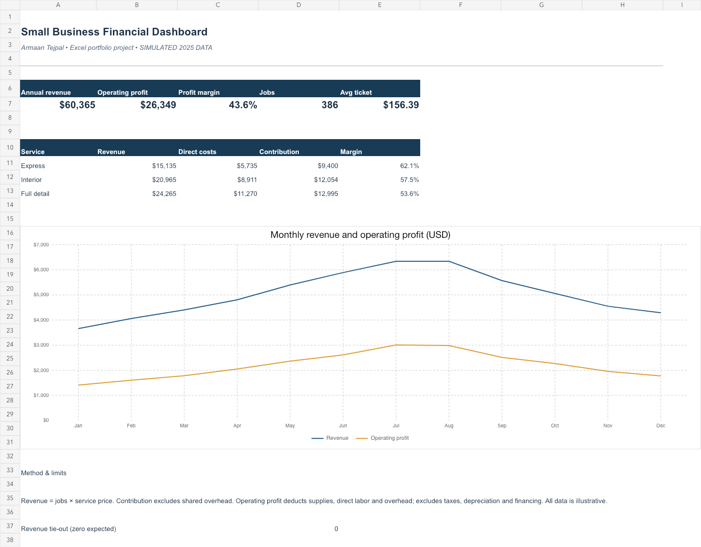
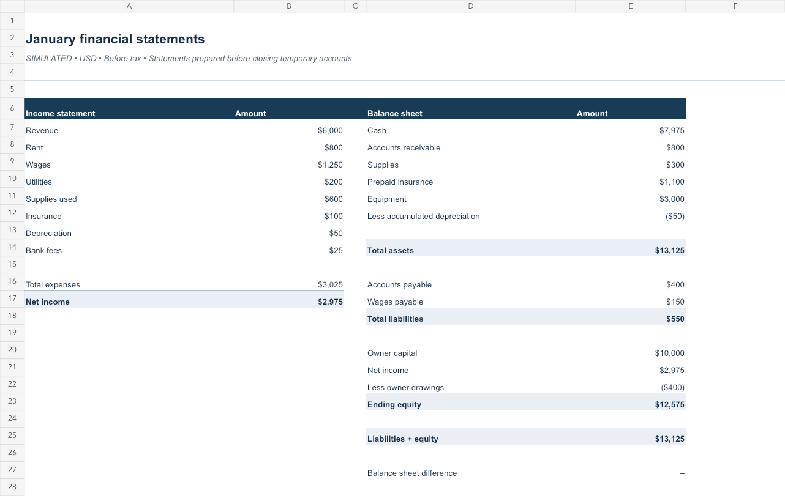

Small Business Financial Dashboard
A 12-month model of a fictional mobile detailing business, with service-level job volume, pricing, supplies, direct labor, and overhead. All figures are illustrative, not Scrubbros business records.
The business question
Which services contribute the most dollars, and how does profitability change through the year?
- Full detail contributes $12,995 before shared overhead—the highest contribution dollars.
- Express has the highest contribution margin at 62.1%, despite the lowest annual revenue.
- July and August each produce $6,340 in revenue; July's lower overhead lifts profit above August.
Model mechanics
- 36 monthly service records across 12 months.
- SUMIFS and SUMPRODUCT aggregate volume, revenue, and direct costs.
- Profit = revenue − supplies − direct labor − overhead.
- Formula-linked Excel chart and service contribution table.
Excludes tax, financing, and depreciation. Direct labor is an illustrative economic cost. Profit is not cash flow.
| Service | Revenue | Direct costs | Contribution | Margin |
|---|
View the workbook dashboard

Try it yourself
Change January Express price from $95 to $105 in Sample Data!D7. Annual revenue should rise by $100 because January has 10 Express jobs. With costs unchanged, annual operating profit also rises by $100. Restore $95 afterward.
Accounting Close & Financial Statements
A January close for a fictional sole proprietor. Follow 17 journal entries through an adjusted trial balance, cash reconciliation, income statement, and balance sheet.
What is in the close?
- 12 regular entries and five adjustments; 34 journal lines.
- 18 accounts summarized with SUMIFS into the trial balance.
- Adjustments for supplies, insurance, depreciation, accrued wages, and a bank fee.
- Linked income statement and balance sheet with reconciliation checks.
Why bank cash differs
| Bank statement balance | $8,375 |
| Add deposit in transit | $1,000 |
| Less outstanding checks | ($1,400) |
| Adjusted bank balance | $7,975 |
| Books before fee | $8,000 |
| Less bank fee adjustment | ($25) |
Timing differences are already recorded in the books. Only the $25 bank fee needs an additional entry. Statements are before tax and before closing temporary accounts; drawings reduce equity, not profit.
View the financial statements

Review assumptions & reproduce a calculation
Equipment cost is $3,000 with a 60-month useful life and no salvage value: monthly depreciation is $50. Annual prepaid insurance is $1,200: January expense is $100. The model excludes sales tax, income tax, and debt.
Increase both debit and credit lines of cash-revenue entry J05 by $100, and increase matching bank receipts by $100. Cash, net income, and ending equity should each increase by $100; reconciliation differences should remain zero.
About this portfolio
Prepared for Armaan Tejpal, an Economics student at UC San Diego with an Accounting minor. These are educational projects, not client engagements or audited financial statements. The workbooks include editable inputs, transparent calculations, and practice exercises.